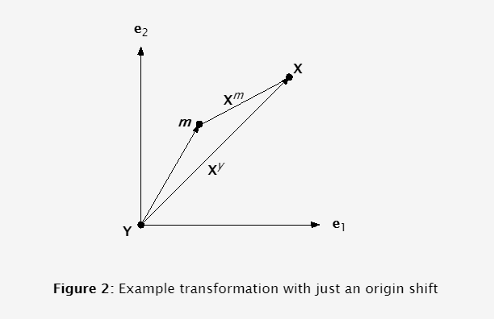

3 Changing Coordinate Frames
A reference frame for Cartesian coordinate systems is defined by two things: an origin and a set of orthonormal vectors that define directions away from the origin. Let's start with a change of origin location. We will be attempting to
transform from my (m) coordinate frame to yours (y).
3.1 Handling a change in coordinate origin
If you and I are both facing the same direction, all you need to know is where I am in your coordinate frame. We denote this quantity m where the coordinate frame's letter is bolded to show it is a vector. The
transformation is now a simple vector addition operation

← Previous
Next →